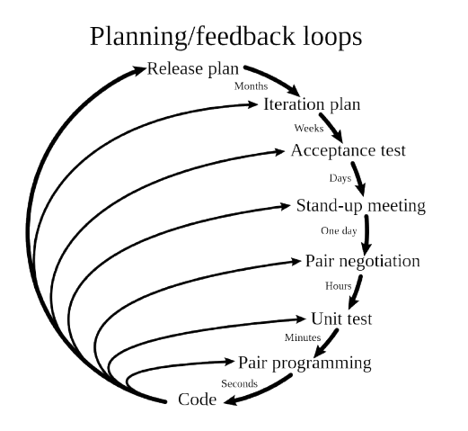

Ekstreemprogrammeerimine
Mis see on?
Ekstreemprogrammeerimine on tarkvaraarenduse viis, mille eesmärk on teha kvaliteetsemat tarkvara ja paremini
arvestada kliendi muutuvate soovidega. See kuulub agiilsete meetodite hulka ja kasutab lühikesi arendustsükleid
ning sagedasi tarkvara väljalaskeid, et kiiresti tagasisidet saada ja uusi nõudeid arvesse võtta.
Mis etapid seal on?
Ekstreemprogrammeerimises on neli põhitegevust, mis kuuluvad tarkvaraarenduse protsessi juurde: koodi kirjutamine, testimine, kuulamine ja disainimine.
- Koodi kirjutamine: Ekstreemprogrammeerimise järgi on kood tarkvaraarenduse kõige olulisem tulemus, sest see aitab luua töötava lahenduse, selgitada
ideid teistele programmeerijatele ja saada üheselt mõistetavat tagasisidet.
- Testimine: Ekstreemprogrammeerimises rõhutatakse põhjalikku testimist, kus automatiseeritud üksustestid ja kasutuselevõtu testid aitavad avastada vead
varakult ning tagada, et kood töötab õigesti ja vastab kliendi vajadustele.
- Kuulamine: Ekstreemprogrammeerimises on oluline, et programmeerijad kuulaksid klienti, mõistaksid tema vajadusi ning suhtleksid temaga tihedalt
plaanimismängu kaudu, et leida parim tehniline lahendus.
- Disainimine: Ekstreemprogrammeerimises on disain vajalik selleks, et hoida süsteem lihtne ja arusaadav ning vältida liigseid sõltuvusi, mis muudaksid
edasise arenduse keeruliseks.
Milline näeb välja arendusmudel joonisena

Mis on arendusmudeli tähtsaim omadus, ja miks
Ekstreemprogrammeerimise arendusmudeli tähtsaim omadus on pidev ja kiire tagasiside, sest see aitab avastada vead varakult, kohaneda kiiresti kliendi
vajadustega, hoida koodi kvaliteeti kõrgel ja vähendada riske.
Võta arendusmudel kokku Heade ja Veade tabelina
| Head |
Vead |
| Paindlikkus muutustele |
Kõrge koodikvaliteet |
| Nõuab suurt meeskonna distsipliini |
Ei sobi suurtele projektidele |
Allikas(Wikipedia)